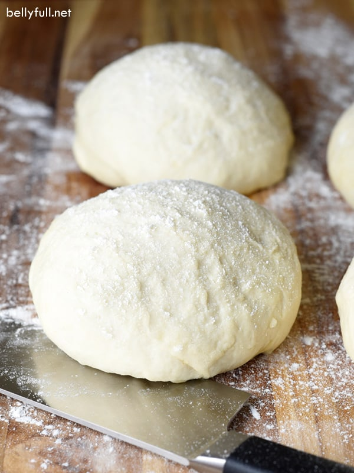

Quick pizza dough recipe
A friend gave me this recipe for pizza dough. It is quick, easy and delicious!

Ingredients
- 400 g plain flour, plus extra to dust
- 1 x7g sachet fast action dried yeast
- 1 teaspoon fine sea salt
- 1 teaspoon caster sugar
- 2 tablespoons olive oil, plus extra to drizzle
- 1 tablespoon cornmeal
Steps
- Preheat the oven to the hottest it will go (around 240°C), before starting to make the dough. Put in a couple of pizza stones, or 2 large baking trays.
- Mix the flour, yeast, salt and sugar together in a mixing bowl. Make a well in the center and add the oil, then add about 225 ml water to bring together as a dough. Tip out onto a floured surface and knead for 1 minute, untill smotth. Leave to rest under the uprutned bowl while you prepare the pizza toppings.
- It's time to shape the pizzas! Roll out one ball at a time on a lightly floured surface, to about 25cm in diameter. Sprinkle in a lare square of baking paper with the cornmeal then lift the dough onto the paper. Stretch and press the pizza dough with your fingertips until it is about 30 cm diameter.
- Spread the pizza with sauce and add your toppings. Drizzle with a little oil and leave to rest for about 10-15 minutes beofre baking. Slide the pizzas onto the preheated pizza stones or hot baking tray. Bake for 10-15 minutes until the base is golden and crisp.